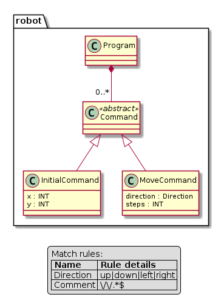

Visualization¶
A meta-model, model and parse-tree can be exported to dot files (GraphViz) for
visualization. Module textx.export contains functions metamodel_export and
model_export that can export meta-model and model to dot files respectively.
But, it is usually more convenient to produce visualization using the textx
command.
If debugging is enabled, meta-model, model and parse trees will automatically get exported to dot.
Dot files can be viewed by dot viewers. There are quite a few dot viewers freely available (e.g. xdot, ZGRViewer).
Alternatively, dot files can be converted to image formats using dot command.
For more info see this SO
thread.
In addition to GraphViz we also support PlantUML as target for our exports
(see textx command/tool). You can copy-paste the exported
file content online on the PlantUML website to visualize it. The PlantUML Tool
is a JAR file (Java) which runs on various platforms. Many Linux distributions
have this tool included (e.g. Ubuntu: apt install platuml).
Producing (meta)model visualizations using the textx command¶
This section describes how to use textx command and registered
generators to produce model and meta-model visualizations.
Visualizations of models and meta-models are implemented by registering
generators from textX (for meta-models) or any (for all models) to dot or
PlantUML file format. Several of these generators are provided by textX. You
can list them by list-generators command:
$ textx list-generators
textX -> dot textX Generating dot visualizations from textX grammars
textX -> PlantUML textX Generating PlantUML visualizations from textX grammars
any -> dot textX Generating dot visualizations from arbitrary models
flow-dsl -> PlantUML flow-codegen Generating PlantUML visualization from flow-dsl
You see that we have two generators from textX language (i.e. textX grammar
language) registered by the textX project. The first as a target uses dot
and the second uses PlantUML. These generators will produce dot (part of
GraphViz) or pu (PlantUML) file respectively.
Also, you can see that there is any -> dot generator. This generator can be
applied to any model and will produce dot output.
You can also see in this example that we have a specific visualization for
language flow-dsl that produces PlantUML code. You can register visualizers
for your own language by registering a generator from your language to some
output that represents visual rendering. Also, you could provide rendering to
some different format for all models (any) or for textX grammars. See the
registration/discovery feature on how to do that.
Note
Generators that produce visualization are by no means different from any other generators (e.g. those that would produce Java or Python code).
Here is an example on how to produce the same visualization described in section Visualization (see the robot example).
$ textx generate robot.tx --target dot
Generating dot target from models:
/home/igor/repos/textX/textX/examples/robot/robot.tx
-> /home/igor/repos/textX/textX/examples/robot/robot.dot
To convert to png run "dot -Tpng -O robot.dot"
Now you can view dot file using some of available viewers. For example, if you
install xdot:
$ xdot robot.dot
or convert it to some other graphical format (GraphViz is needed):
$ dot -Tpng -O robot.dot
and you will get robot.dot.png that looks like this:

You can also generate PlantUML output from the grammar files:
$ textx generate robot.tx --target plantuml
Generating plantuml target from models:
/home/igor/repos/textX/textX/examples/robot/robot.tx
-> /home/igor/repos/textX/textX/examples/robot/robot.pu
To convert to png run 'plantuml /home/igor/repos/textX/textX/examples/robot/robot.pu'
This will produce file robot.pu. Now convert it to robot.png by (PlantUML
must be installed and accessible on path):
$ plantuml robot.pu
The produced robot.png image will look like this:

Similarly you can generate output from any model. For example:
$ textx generate program.rbt --grammar robot.tx --target dot
Generating dot target from models:
/home/igor/repos/textX/textX/examples/robot/program.rbt
-> /home/igor/repos/textX/textX/examples/robot/program.dot
To convert to png run "dot -Tpng -O program.dot"
In this example we had to supply --grammar option to generate command as the
robot language is not registered by the registration API.
If we had the robot language registered, meta-model could be discovered by the
file extension.
We could as usual visualize the dot file by some of the available viewers or
transform it to png format. The produced image will look like this:

Note
PlantUML output is not yet available for model files.
Visualize meta-models programmatically¶
To visualize a meta-model programmatically do (see Entity example):
from textx import metamodel_from_file
from textx.export import metamodel_export
entity_mm = metamodel_from_file('entity.tx')
metamodel_export(entity_mm, 'entity.dot')
entity.dot file will be created. You can visualize this file by using various
dot viewers or convert it to various image formats using the dot tool.
$ dot -Tpng -O entity.dot
The following image is generated:

Alternatively, you can also specify an alternative renderer to export your meta model for the PlantUML tool.
from textx import metamodel_from_file
from textx.export import metamodel_export, PlantUmlRenderer
entity_mm = metamodel_from_file('entity.tx')
metamodel_export(entity_mm, 'entity.pu',renderer=PlantUmlRenderer())
entity.pu file will be created. You can convert it to various image formats
using the plantuml tool.
$ plantuml -Tpng entity.pu
The following image is generated:

Visualize models programmatically¶
Similarly to meta-model visualization, you can also visualize your models (see Entity example).
from textx.export import model_export
person_model = entity_mm.model_from_file('person.ent')
model_export(person_model, 'person.dot')
Convert this dot file to png with:
$ dot -Tpng -O person.dot
The following image is generated: